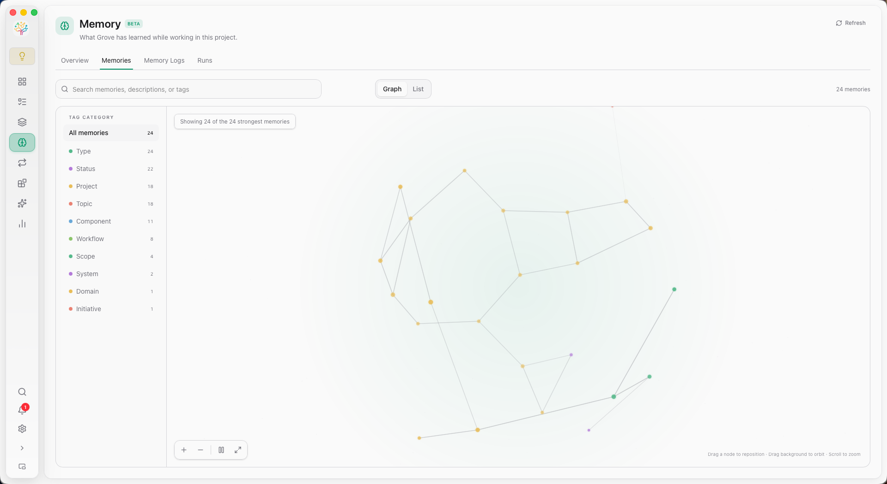

For everyone
on the team.
Studio is the room inside Grove where non-coders join the AI workflow. Upload assets. Edit project memory. Review artifacts as they land. Sketch ideas the agents can read. No terminal. No git. Still shipping.

Give the agents
everything they need.
Drop in assets, wire up shared files, and let the AI team work with the same inputs you do. Studio tracks artifacts as they're produced and renders them inline — diagrams, previews, images, all without leaving Grove.
Upload once. Every agent sees it.
Drag files into Studio's asset manager. They sync across worktrees via hard links so every task has immediate access, without duplicating storage.
- Full file manager — upload, organize, rename, delete
- Artifact sync — agent outputs surface here automatically
- Cross-platform links (junctions on Windows, symlinks on Unix)

D2 diagrams
D2 files render inline with a source/preview toggle. Draw architecture, get diagrams.
Mermaid
Mermaid fenced code blocks render as interactive diagrams in preview and chat.
SVG & images
PNG, JPG, WEBP, GIF, SVG — all preview inline. Click for fullscreen lightbox with scroll-zoom.
Artifact refresh
While an agent is busy, the artifact preview panel auto-refreshes. Watch the output appear.
Context that grows.
Memory you can inspect.
Chat history records a conversation. Project Memory preserves the decisions, constraints, and working knowledge that should matter in the next one — without loading the whole past into every prompt.

Remember selectively.
Agents recall concise candidates, read only the relevant full Memory, and append new decisions or corrections as short-term Logs. Grove keeps every step visible in the UI.
- Durable Markdown Entities with titles, structured Tags, and importance scores
- Append-only Logs linked to the Task and Chat where knowledge emerged
- Graph and List views for search, filtering, and relationship exploration
- A TaskChat pill that shows the exact Memory read in the current turn
Logs stay close to the work.
Agents append decisions, corrections, constraints, and reusable lessons without pretending every observation is already durable knowledge.
Runs reconcile the evidence.
Scheduled or event-driven Organization Runs review pending Logs, update the Entity structure, and preserve a visible Run history.
You can see what persists.
Search, inspect, edit, or delete Memory. Relations remain lightweight, and full reads are explicit instead of hidden prompt injection.
Draw it.
The agent reads it.
Grove ships a first-class Excalidraw panel. Every sketch is stored in the task's workdir, synced across clients in real time, and exposed to agents through dedicated MCP tools. Show the agent what you mean.
A canvas per task.
Open a Sketch panel in FlexLayout like any other. Create multiple named sketches per task, right-click tabs to rename or delete, draw on a real Excalidraw surface.
- First-class panel in FlexLayout — drag, split, maximize
- Multi-client live updates over WebSocket
- Per-task storage under the task workdir — versioned alongside code
- Lazy-loaded bundle — zero cost if you never open one

MCP tools agents see
grove_sketch_read_me
One-time format reference. The agent calls this once per conversation to learn element syntax and the Grove pseudo-elements.
grove_sketch_list
List every sketch in the current Studio task with created/updated timestamps.
grove_sketch_read
Read a sketch by name — returns a rendered image (when fresh), element summary, and a fresh checkpoint_id.
grove_sketch_draw
Create or modify a sketch. Checkpoint-driven — one tool handles both, with restoreCheckpoint pseudo-elements for incremental edits.
You don't need to know git.
You can still ship.
Grove's bet: the next decade of software is built by teams where not everyone codes. Studio is how Grove keeps the door open.